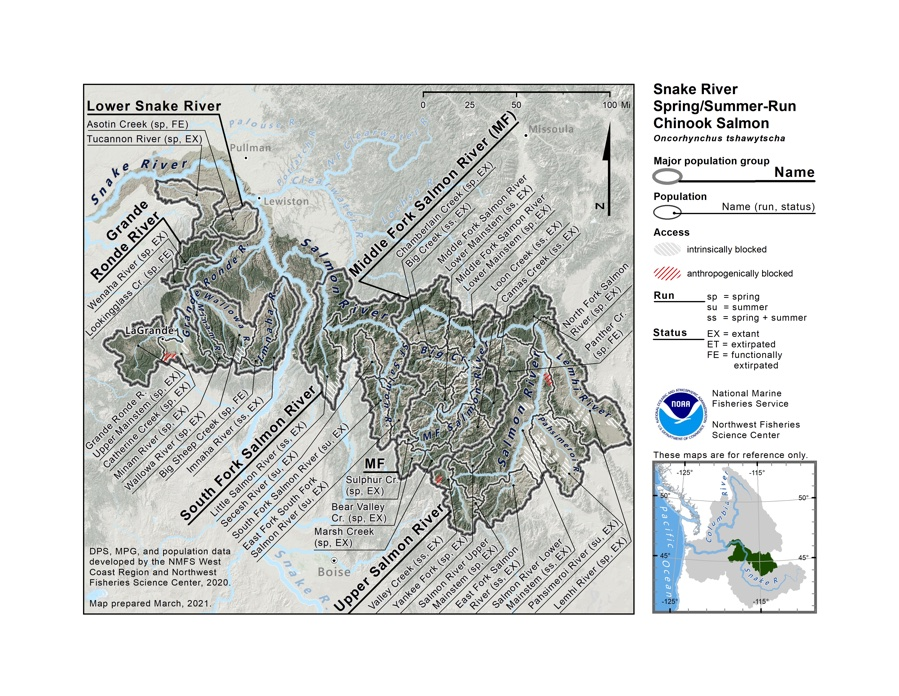
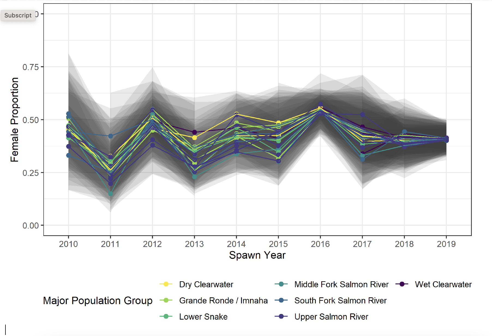
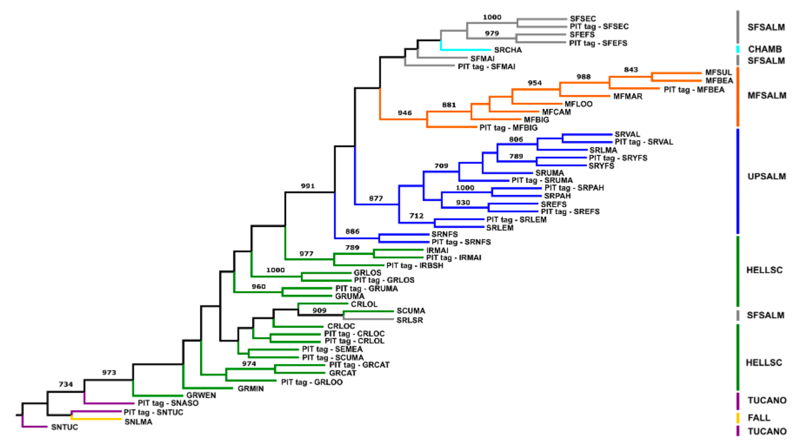
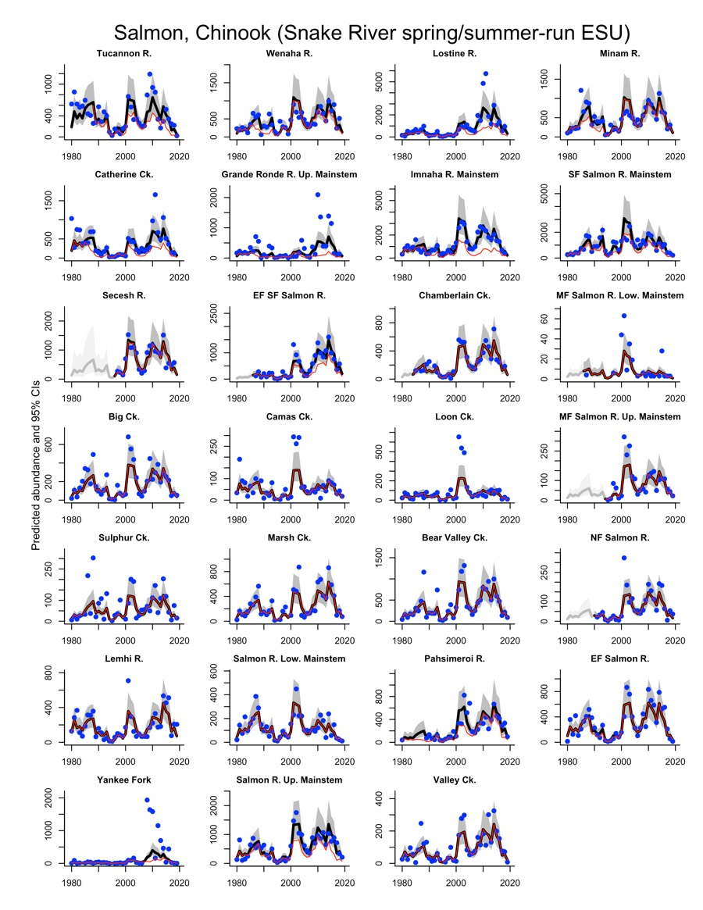
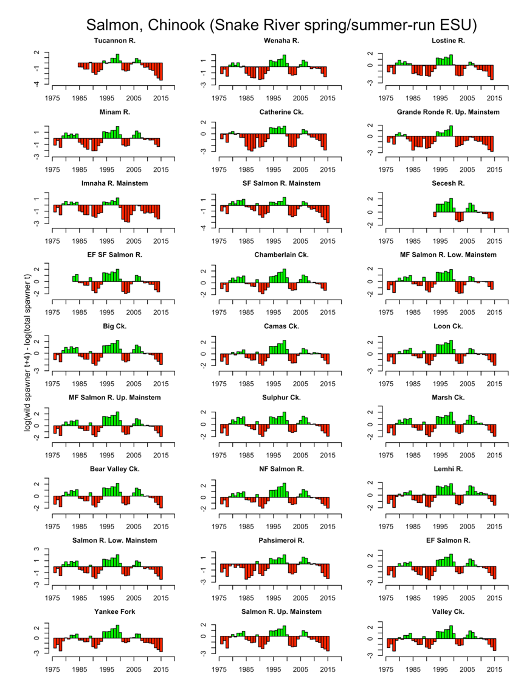
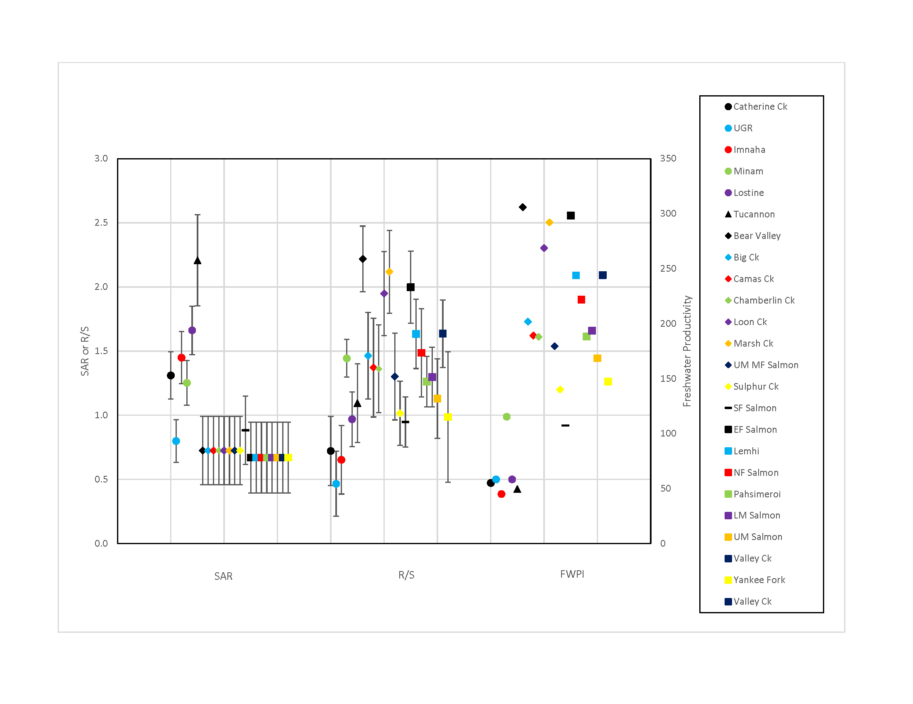
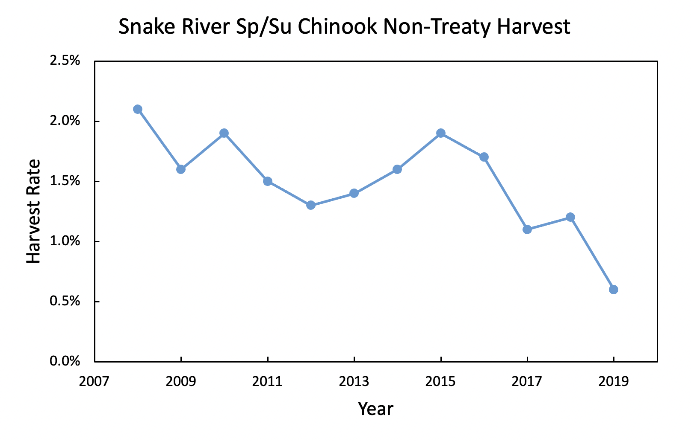
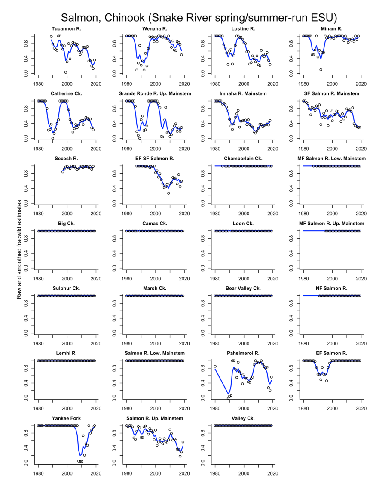

6 Snake River Spring/summer-Run Chinook salmon ESU
6.1 Brief description of ESU
The Snake River Spring-Summer Chinook salmon ESU includes all naturally spawned populations of spring/summer-run Chinook salmon in the mainstem Snake River and the Tucannon River, Grande Ronde River, Imnaha River, and Salmon River subbasins, as well as fifteen artificial propagation programs (85 FR 81822, Figure 6.1). The ESU was first listed under the ESA in 1992, and the listing was reaffirmed in 2005 and 2012.
6.2 Summary of previous viability conclusions
2005
The 2005 BRT report evaluated the viability of Snake River spring/summer Chinook using data on returns through 2001, with the majority of BRT risk rating points being assigned to the most likely to be endangered category (good_updated_2005?). The BRT noted that although there were a number of extant spawning aggregations within this ESU, a substantial number of historical spawning populations have been lost. The most serious risk factor for the ESU was low natural productivity (spawner to spawner return rates) and the associated decline in abundance to extremely low levels relative to historical returns. Large increases in escapement estimates for many (but not all) areas for the 2001 return year were considered encouraging by the BRT. However the BRT also acknowledged that return levels were highly variable and that abundance should be measured over at least an 8 year period and that by this measure the then recent abundance levels across the ESU fall short of interim objectives. The BRT was concerned about the high level of production/mitigation and supplementation hatchery programs across the ESU, noting that these programs represented ongoing risks to natural populations and made it difficult to assess trends in natural productivity and growth rates. The phasing out of the non-native Rapid River-origin hatchery program in the Grande Ronde Basin was viewed as a positive action.
2010
(ford_status_2011?) concluded that population level viability ratings remained at high risk across all MPGs within the ESU; although natural spawning abundance estimates had increased, all populations remained below minimum natural origin abundance thresholds. Relatively low natural production rates and spawning levels below minimum abundance thresholds remained a major concern across the ESU. The ability of populations to be self-sustaining through normal periods of relatively low ocean survival remained uncertain. Factors cited by the 2005 BRT (good_updated_2005?) remained as concerns or key uncertainties for several populations. Overall, the new information considered in 2010 did not indicate a change in the biological risk category since the time of the prior BRT status review in 2005.
2015
(nwfsc_status_2015?) concluded that the majority of populations in the Snake River spring/summer Chinook salmon ESU remained at high overall risk. Natural origin abundance had increased over the levels reported in the prior review for most populations in this ESU, although the increases were not substantial enough to change viability ratings. Relatively high ocean survivals in recent years were a major factor in recent abundance patterns. Ten populations increased in both abundance and productivity, seven increased in abundance while their updated productivity estimates decreased, two populations decreased in abundance and increased in productivity. Spatial structure ratings remain unchanged from the prior reviews, with low or moderate risk levels for the majority of populations in the ESU.
6.3 Description of new data available for this review
The previous ESA status review (nwfsc_status_2015?) analyzed spawner abundance data series for most populations in this ESU using expansions from index area redd counts and weir estimates (ictrt_current_2010?). The current ICTRT data series extends the time period of record through at least the 2018 or 2019 return year for populations across all of the MPGs in the Spring/Summer Chinook ESU. Data and analyses used in this assessment were obtained primarily from state and tribal fisheries agencies. ODFW, WDFW and IDFG updated annual estimates of spawning escapement, hatchery/wild spawner fractions and age composition for most populations, often incorporating data generated by regional projects conducted by the Nez Perce, Umatilla and Shoshone Bannock tribal fisheries departments. In several cases the primary source for information on a population was an ongoing tribal sampling program (e.g., the Didson sonar based program in the Secesh River and the mark recapture weir sampling project in Johnson Creek – both conducted by the Nez Perce Tribal Fisheries department). A major advance since the data compilation efforts leading to the 2015 ESA status review has been the cooperative efforts of regional fish managers to maintain regionally compatible databases using standardized formats and methods to promote efficiency and access to population level estimates of key viability indicators including spawning abundance, hatchery/natural proportions and age structure through the Coordinated Assessments Program.
Efforts to refine and document the estimates for individual populations have continued. In most cases, updates to estimated escapements or hatchery/wild spawner proportions for prior years have been relatively minor. Notable additions and changes include incorporation of additional spawner survey and weir count data provided by the Shoshone -Bannock Tribal Fisheries Department into population level spawner estimates for the Yankee Fork and Panther Creek.
PIT tag detection based population abundance estimates for populations above Lower Granite Dam have been generated for return years 2010-2019 based on a state-space patch occupancy model (DABOM) that partitions the natural origin run at large passing Lower Granite Dam into 28 population groups {IPTDSW, 2020 #2519}. By combining PBT based identification of phenotypically unmarked hatchery origin fish, PIT tag based escapement data can be used to more robustly estimate natural origin population abundance. This approach adds valuable information to the robust population estimation process that has been in place for decades based on redd and weir counts. For example, by incorporating data from sex markers and scale ageing, estimates of sex ratio (Figure 6.2) and age structure can be made for each of the patches in the population estimation model

Population genetic structure
Sampling of adult Snake River spring/summer Chinook at Lower Granite Dam and subsequent detections of PIT tags in ICTRT population spawning areas has allowed the development of a large genetic data set based on SNP markers (iptdsw_-stream_2020?). A neighbor-joining tree (Figure 6.3) created from PIT tagged adults over the spawning years 2010-2019, when combined with reference GSI baseline samples across the ESU,confirms most of the expected population structure, with the notable exception of the samples from fish spawning in the Little Salmon River grouping genetically with the Upper South Fork Clearwater samples (iptdsw_-stream_2020?).

Spatial structure
ICTRT criteria for evaluating spatial structure within populations are based on observing evidence of spawning usage across defined spawning areas within populations, with an emphasis on historically relatively large contiguous reaches (major and minor spawning areas). Redd surveys were conducted by co-managers (NPT, SBT, ODFW, WDFW, IDFG) and the geolocated redds were aligned with ICTRT identified major and minor spawning area over the 2015-2019 run years (felts_idaho_2020?). Monitoring occurred in 29 major spawning areas, 13 of which were rated as occupied, while monitoring of eight minor spawning areas resulted in only one being rated as occupied. However, non-occupied ratings of mSA and MSA does not equate to only no spawning as a “unoccupied” rating can also result from patchy spawning not distributed across the entire reach.
Ocean Condition Indices
Snake River spring/summer Chinook salmon are a component of the Columbia River run that is believed to occupy mid-shelf waters during the early ocean life history phase. Aggregate annual returns of Columbia River Spring Chinook are correlated with a range of ocean condition indices including measures of broad scale physical conditions, local biological indicators, and local physical factors (Figure 129) (Peterson et al. 2014a). Several indicators, either individually or in combination, correlate well with spring Chinook salmon adult returns with a lag of 1 to 2 years. However, for each specific indicator or combination, there are anomalous years that fall outside of the apparent relationships. Work is continuing to further understand the relationships among physical and biological ‘drivers’ and annual levels of ocean survival for salmonid species in the ocean environment. After accounting for age at return at time of ocean entry, the annual pattern in the Snake River spring/summer Chinook ESU SAR index generally corresponds to the composite rankings across ocean indicators available for early ocean years starting in the late 1990s (Peterson et al. 2014). Indicators of ocean condition are highly correlated with each other, and exhibit strong temporal autocorrelation (Figure 129, (peterson_ocean_2019?)). As a result, when indicators point to conditions that result in poor ocean productivity for salmonid populations, they do so as a suite of indicators, and for runs of ‘good’ or ‘bad’ years (see Habitat chapter). Historically, ocean conditions cycled between periods of high and low productivity. However, global climate change is likely to disrupt this pattern, in general, leading to a preponderance of low productivity years, with an unknown temporal distribution (crozier_snake_2020?). Recent (2015-2019) ensemble ocean indicators rankings include four of the worst seven years in the past 20, meaning that an entire Chinook generation has been subjected to poor ocean productivity conditions.
6.4 Abundance and productivity
Updated data series on spawner abundance, age structure and hatchery/natural proportions were used to generate current assessments of abundance and productivity at the population level. Evaluations were done using both a set of metrics corresponding to those used in prior ESA status reviews as well as a set corresponding to the specific viability criteria based on ICTRT recommendations for this ESU. The viability review metrics were done consistently across all ESUs and DPSs to facilitate comparisons across domains. Assessments using the ICTRT metrics are described in the TRT and Recovery Plan Criteria section below. The ICTRT abundance and productivity metrics are measured over longer time frames to dampen the effects of annual variations and they use annual natural origin age composition to calculate brood year recruitment when sampling levels meet agency criteria.
Estimates of the annual abundance of natural origin spawners within each of 27 Snake River Spring Summer Chinook ESU populations are summarized in five year increments (Table 6.1) and are illustrated in Figure 6.4. The most recent five year geometric mean abundance estimates for 26 out of the 27 populations are lower than the corresponding estimates for the previous five year period by varying degrees, the estimate for the 27th population was a slight increase from a very low abundance in the prior five year period. The entire ESU abundance data shows a consistent and marked pattern of declining population size, with the recent five year abundance levels for the 27 populations declining by an average of 55%. Medium-term (15 year) population trends in total spawner abundance were positive over the period 1990 to 2005 for all of the population natural origin abundance series, and are all declining over the more recent time interval (2004-2019; Table 6.2, Figure 6.4). The consistent and sharp declines for all populations in the ESU are concerning as the abundances for some populations are approaching similar levels to those of the early 1990s when the ESU was listed.


| Population | MPG | 1990-1994 | 1995-1999 | 2000-2004 | 2005-2009 | 2010-2014 | 2015-2019 | % Change |
|---|---|---|---|---|---|---|---|---|
| Tucannon R. | Low. Snake | 230 (314) | 34 (84) | 226 (398) | 276 (403) | 285 (422) | 47 (185) | -84 (-56) |
| Wenaha R. | Grande Ronde/Imnaha | 71 (305) | 164 (186) | 612 (638) | 354 (364) | 507 (698) | 383 (529) | -24 (-24) |
| Lostine R. | Grande Ronde/Imnaha | 82 (159) | 105 (108) | 398 (711) | 340 (899) | 1024 (2807) | 366 (925) | -64 (-67) |
| Minam R. | Grande Ronde/Imnaha | 110 (284) | 162 (166) | 541 (552) | 449 (460) | 684 (765) | 375 (401) | -45 (-48) |
| Catherine Ck. | Grande Ronde/Imnaha | 0 (102) | 59 (59) | 124 (256) | 71 (209) | 430 (890) | 85 (237) | -80 (-73) |
| Grande Ronde R. Up. Mainstem | Grande Ronde/Imnaha | 33 (96) | 32 (32) | 54 (103) | 22 (109) | 155 (906) | 51 (218) | -67 (-76) |
| Imnaha R. Mainstem | Grande Ronde/Imnaha | 214 (551) | 270 (536) | 938 (2142) | 286 (1308) | 685 (2055) | 352 (866) | -49 (-58) |
| SF Salmon R. Mainstem | SF Salmon | 690 (1089) | 344 (602) | 968 (1540) | 628 (1128) | 913 (1184) | 160 (497) | -82 (-58) |
| Secesh R. | SF Salmon | (NA) | 187 (206) | 997 (1028) | 435 (459) | 1043 (1064) | 468 (489) | -55 (-54) |
| EF SF Salmon R. | SF Salmon | 116 (116) | 49 (50) | 369 (487) | 129 (308) | 709 (1147) | 359 (629) | -49 (-45) |
| Chamberlain Ck. | MF Salmon | 121 (121) | 35 (35) | 468 (468) | 198 (198) | 454 (454) | 228 (228) | -50 (-50) |
| MF Salmon R. Low. Mainstem | MF Salmon | (NA) | (NA) | 28 (28) | 4 (4) | 4 (4) | 5 (5) | 25 (25) |
| Big Ck. | MF Salmon | 76 (76) | 29 (29) | 302 (302) | 121 (121) | 270 (270) | 99 (99) | -63 (-63) |
| Camas Ck. | MF Salmon | 20 (20) | 13 (13) | 115 (115) | 43 (43) | 42 (42) | 42 (42) | 0 (0) |
| Loon Ck. | MF Salmon | 25 (25) | 21 (21) | 225 (225) | 54 (54) | 65 (65) | 31 (31) | -52 (-52) |
| MF Salmon R. Up. Mainstem | MF Salmon | (NA) | 13 (13) | 140 (140) | 52 (52) | 104 (104) | 58 (58) | -44 (-44) |
| Sulphur Ck. | MF Salmon | 59 (59) | 21 (21) | 55 (55) | 49 (49) | 112 (112) | 32 (32) | -71 (-71) |
| Marsh Ck. | MF Salmon | 102 (102) | 99 (99) | 285 (285) | 126 (126) | 563 (563) | 197 (197) | -65 (-65) |
| Bear Valley Ck. | MF Salmon | 177 (177) | 95 (95) | 662 (662) | 305 (305) | 777 (777) | 236 (236) | -70 (-70) |
| NF Salmon R. | Up. Salmon | 22 (22) | 8 (8) | 112 (112) | 59 (59) | 129 (129) | 41 (41) | -68 (-68) |
| Lemhi R. | Up. Salmon | 51 (51) | 51 (51) | 198 (198) | 86 (86) | 262 (262) | 238 (238) | -9 (-9) |
| Salmon R. Low. Mainstem | Up. Salmon | 63 (63) | 41 (41) | 239 (239) | 99 (99) | 137 (137) | 37 (37) | -73 (-73) |
| Pahsimeroi R. | Up. Salmon | 22 (73) | 45 (73) | 173 (343) | 209 (275) | 360 (387) | 132 (283) | -63 (-27) |
| EF Salmon R. | Up. Salmon | 69 (108) | 34 (46) | 442 (442) | 224 (224) | 602 (602) | 138 (138) | -77 (-77) |
| Yankee Fork | Up. Salmon | 16 (16) | 6 (6) | 60 (60) | 25 (120) | 169 (623) | 22 (24) | -87 (-96) |
| Salmon R. Up. Mainstem | Up. Salmon | 227 (275) | 68 (86) | 671 (1100) | 326 (566) | 628 (898) | 170 (509) | -73 (-43) |
| Valley Ck. | Up. Salmon | 26 (26) | 26 (26) | 109 (109) | 85 (85) | 192 (192) | 67 (67) | -65 (-65) |
| Population | MPG | 1990-2005 | 2004-2019 |
|---|---|---|---|
| Tucannon R. | Low. Snake | 0.04 (-0.07, 0.15) | -0.13 (-0.23, -0.04) |
| Wenaha R. | Grande Ronde/Imnaha | 0.17 (0.08, 0.26) | -0.04 (-0.11, 0.02) |
| Lostine R. | Grande Ronde/Imnaha | 0.12 (0.03, 0.21) | 0 (-0.09, 0.09) |
| Minam R. | Grande Ronde/Imnaha | 0.12 (0.03, 0.21) | -0.03 (-0.1, 0.03) |
| Catherine Ck. | Grande Ronde/Imnaha | 0.11 (0.03, 0.2) | -0.01 (-0.12, 0.1) |
| Grande Ronde R. Up. Mainstem | Grande Ronde/Imnaha | 0.08 (-0.01, 0.17) | 0.01 (-0.06, 0.09) |
| Imnaha R. Mainstem | Grande Ronde/Imnaha | 0.1 (0.01, 0.19) | -0.02 (-0.09, 0.05) |
| SF Salmon R. Mainstem | SF Salmon | 0.07 (-0.03, 0.16) | -0.12 (-0.21, -0.03) |
| Secesh R. | SF Salmon | -0.02 (-0.09, 0.05) | |
| EF SF Salmon R. | SF Salmon | 0.11 (0, 0.21) | 0.05 (-0.03, 0.13) |
| Chamberlain Ck. | MF Salmon | 0.11 (0, 0.21) | -0.02 (-0.09, 0.05) |
| MF Salmon R. Low. Mainstem | MF Salmon | -0.08 (-0.14, -0.02) | |
| Big Ck. | MF Salmon | 0.1 (-0.01, 0.21) | -0.03 (-0.11, 0.04) |
| Camas Ck. | MF Salmon | 0.11 (0, 0.22) | -0.03 (-0.09, 0.03) |
| Loon Ck. | MF Salmon | 0.14 (0.03, 0.25) | -0.08 (-0.14, -0.01) |
| MF Salmon R. Up. Mainstem | MF Salmon | -0.03 (-0.1, 0.04) | |
| Sulphur Ck. | MF Salmon | 0.07 (-0.03, 0.17) | -0.03 (-0.11, 0.04) |
| Marsh Ck. | MF Salmon | 0.08 (-0.02, 0.19) | 0.01 (-0.07, 0.09) |
| Bear Valley Ck. | MF Salmon | 0.11 (0.01, 0.21) | -0.03 (-0.11, 0.04) |
| NF Salmon R. | Up. Salmon | 0.13 (0.02, 0.24) | -0.03 (-0.11, 0.04) |
| Lemhi R. | Up. Salmon | 0.09 (-0.02, 0.19) | 0.04 (-0.03, 0.11) |
| Salmon R. Low. Mainstem | Up. Salmon | 0.08 (-0.02, 0.19) | -0.09 (-0.16, -0.02) |
| Pahsimeroi R. | Up. Salmon | 0.16 (0.07, 0.25) | -0.02 (-0.12, 0.07) |
| EF Salmon R. | Up. Salmon | 0.14 (0.03, 0.26) | -0.05 (-0.14, 0.03) |
| Yankee Fork | Up. Salmon | 0.14 (0.02, 0.25) | -0.02 (-0.11, 0.06) |
| Salmon R. Up. Mainstem | Up. Salmon | 0.08 (-0.02, 0.18) | -0.06 (-0.14, 0.02) |
| Valley Ck. | Up. Salmon | 0.12 (0.01, 0.22) | -0.03 (-0.1, 0.05) |
Smolt to adult return survival estimates (SARs) are generated by the Columbia River Data Access in Real Time (cbr_columbia_2020?) project using PIT tag detections from all release locations within each population basin (Columbia River DART, 2020). The SAR indices represent cumulative marine, nearshore and estuary survival. shows the geometric mean of R/S and SAR indices for the stocks available across five MPGs in the ESU. In general, these broad-brush descriptors of population processes indicate relatively poor ocean survival for the Salmon River MPGs and relatively poor freshwater productivity for the Grande Ronde and Lower Snake River MPGs. Using the R/S and SAR indicators by population, it is possible to generate an indicator of fresh water productivity (FWPI) as a ratio of R/S and SAR. This quantity can be thought of as an indicator of smolts per spawner, and thus, the overall population productivity in the freshwater environment. An FWPI score of >100 should indicate healthy fresh water productivity (roughly 100 smolts per female). The initial assessment by the (noauthor_ictrt_2007?) ICTRT (2007) identified significant abundance/productivity gaps for this ESU. In general, populations within Grande Ronde and Lower Snake River MPG are still showing the lowest productivity.

6.5 Non-treaty Harvest
Harvest impacts on the spring component of this ESU are essentially the same as those on the Upper Columbia River (Figure 6.7). Harvest occurs in the lower portion of the mainstem Columbia River. Mainstem Columbia River fisheries represent the majority of harvest impacts on this ESU. In some years additional harvest in the Snake River basin on specific populations within the ESU occurs. Snake River summer Chinook share the ocean distribution patterns of the upper basin spring runs and are only subject to significant harvest in the mainstem Columbia River. Harvest of summer Chinook has been more constrained than that of spring Chinook with consequently lower exploitation rates on the summer component of this ESU. However, the overall pattern of exploitation rates calculated by the TAC is nearly identical to that of the Upper Columbia River spring Chinook.

6.6 Spatial structure and diversity
Current estimates of spatial structure and diversity ratings for Snake River Spring/Summer Chinook populations are summarized in Table 14. The ICTRT ratings for spatial structure remain unchanged. Most population abundance estimates are based on redd or weir counts conducted across reaches within or across major spawning areas. Recent survey results are consistent with records for the years analyzed by the ICTRT.
The proportion of hatchery origin spawners within populations varies considerably across MPGs (Figure 6.8, Table 6.3). All five extant populations in the Grande Ronde River basin had relatively high hatchery spawner proportions in the 1990s, reflecting the large scale use of out of basin stock (Rapid River) in local releases during that period. Managers transitioned the release programs to incorporate local natural origin brood stock in the mid 1990s. Currently five of the six extant natural population tributaries as well as Lookingglass Creek (with an extripated natal population) have targeted hatchery releases. During that transition, returning hatchery origin fish from the Rapid River releases were actively removed prior to spawning. Returns from natural origin broodstock increased as the specific in-basin programs reached their smolt production objectives. The current local broodstock based hatchery programs in three of the basins are designed to supplement natural spawning while contributing to meeting mitigation objectives. Releases into Lookingglass Creek, an extirpated population, are a conventional segregated program. The historical Lookingglass Creek run is believed to have been extirpated as a result of the out of basin hatchery program. The current program uses broodstock that originated from Catherine Creek. The Minam and Wenaha River populations do not have direct supplementation programs. The Imnaha River, an adjacent river basin to the Grande Ronde, is also in this MPG, has an ongoing integrated hatchery program that incorporates natural origin broodstock.
The single current extant population in the Lower Snake River MPG, the Tucannon River, has an ongoing supplementation program, and hatchery returns have constituted about a third of spawning in natural areas in recent years. Mark recapture estimates compared to redd count and carcass recoveries indicate that prespawn mortalities in the Tucannon River have been relatively high in recent years. Efforts are underway to further quantify and to identify potential direct causes (bumgarner_lyons_2015?). Hatchery proportions for populations in the Middle Fork Salmon MPG are based on carcass recoveries and remain very low, indicating negligible straying rates as there are no direct release programs in this river basin.
Three of the four South Fork Salmon MPG populations have ongoing hatchery programs. Hatchery proportions for the two of the three populations in the South Fork Salmon River with active hatchery programs decreased marginally in the most recent five year update. The Secesh River continues to show low hatchery proportions reflecting some straying from the programs in the adjacent populations. Integrated hatchery programs are now being implemented in parallel to ongoing production (segregated) operations in the South Fork and East Fork of the South Fork Salmon River facilities. The ICTRT included a fourth population in the neighboring Little Salmon River drainage in this MPG. This population includes returns from large scale hatchery releases although some of its side tributary spawning areas likely have low hatchery contributions. Direct estimates of natural origin spawners for this population are limited to weir passage counts for the Rapid River tributary.
In the Upper Salmon River MPG, four of the seven populations with sufficient information to directly estimate hatchery contributions had very low hatchery proportions (Lemhi River, East Fork Salmon River, Valley Creek and the Lower Mainstem Salmon River). The most recent five year mean for the Pahsimeroi River was also relatively low. Both of the hatchery facilities in this MPG are operating parallel integrated and segregated programs. Two of the other populations in this MPG are the subject of active hatchery release programs as reflected in their respective average spawner proportions. Hatchery contributions to spawning in the bulk of the habitat used by the Upper Salmon River population are regulated by managing passage at Sawtooth weir, located on the mainstem Salmon River near the downstream extent of spawning. Releases of any origin fish (integrated/segregated) has occurred above the weirs at both the USR and PAH facilities to meet escapement goals due to recent low returns. Clearly, pHOS in these populations will be impacted, but operating agreement balances the risks associated with introgression with depensation at very low run sizes. Hatchery proportions within the Yankee Fork population have increased substantially in recent years, reflecting returns from a large scale supplementation effort conducted by the Shosonne Bannock tribal fisheries department. In some recent years the program has augmented ongoing smolt releases with adult plants in the Yankee Fork and egg boxes in Panther Creek, when there are surplus returns from the Sawtooth Hatchery program in the Upper Salmon River (denny_yankee_2015?). Recent efforts to evaluate the origin of the Panther Creek spawning population has shown a mixture of potentially long term occupants (close to MFSR) and clear hatchery origin stocks (SFSR, Rapid River, USR, and PAH).

| Population | 1995-1999 | 2000-2004 | 2005-2009 | 2010-2014 | 2015-2019 |
|---|---|---|---|---|---|
| Tucannon R. | 0.64 | 0.61 | 0.69 | 0.68 | 0.27 |
| Wenaha R. | 0.89 | 0.96 | 0.97 | 0.73 | 0.74 |
| Lostine R. | 0.97 | 0.61 | 0.39 | 0.40 | 0.42 |
| Minam R. | 0.97 | 0.98 | 0.98 | 0.89 | 0.94 |
| Catherine Ck. | 1.00 | 0.57 | 0.35 | 0.49 | 0.38 |
| Grande Ronde R. Up. Mainstem | 1.00 | 0.76 | 0.33 | 0.22 | 0.24 |
| Imnaha R. Mainstem | 0.53 | 0.44 | 0.23 | 0.34 | 0.41 |
| SF Salmon R. Mainstem | 0.59 | 0.64 | 0.56 | 0.77 | 0.32 |
| Secesh R. | 0.91 | 0.97 | 0.95 | 0.98 | 0.96 |
| EF SF Salmon R. | 0.99 | 0.76 | 0.43 | 0.62 | 0.58 |
| Chamberlain Ck. | 1.00 | 1.00 | 1.00 | 1.00 | 1.00 |
| MF Salmon R. Low. Mainstem | 1.00 | 1.00 | 1.00 | 1.00 | 1.00 |
| Big Ck. | 1.00 | 1.00 | 1.00 | 1.00 | 1.00 |
| Camas Ck. | 1.00 | 1.00 | 1.00 | 1.00 | 1.00 |
| Loon Ck. | 1.00 | 1.00 | 1.00 | 1.00 | 1.00 |
| MF Salmon R. Up. Mainstem | 1.00 | 1.00 | 1.00 | 1.00 | 1.00 |
| Sulphur Ck. | 1.00 | 1.00 | 1.00 | 1.00 | 1.00 |
| Marsh Ck. | 1.00 | 1.00 | 1.00 | 1.00 | 1.00 |
| Bear Valley Ck. | 1.00 | 1.00 | 1.00 | 1.00 | 1.00 |
| NF Salmon R. | 1.00 | 1.00 | 1.00 | 1.00 | 1.00 |
| Lemhi R. | 1.00 | 1.00 | 1.00 | 1.00 | 1.00 |
| Salmon R. Low. Mainstem | 1.00 | 1.00 | 1.00 | 1.00 | 1.00 |
| Pahsimeroi R. | 0.65 | 0.51 | 0.79 | 0.93 | 0.54 |
| EF Salmon R. | 0.77 | 1.00 | 1.00 | 1.00 | 1.00 |
| Yankee Fork | 1.00 | 1.00 | 0.52 | 0.39 | 0.93 |
| Salmon R. Up. Mainstem | 0.80 | 0.62 | 0.58 | 0.71 | 0.36 |
| Valley Ck. | 1.00 | 1.00 | 1.00 | 1.00 | 1.00 |
6.7 Biological viability relative to recovery goals
The ICTRT identified 27 extant and 4 extirpated populations of Snake River Spring/Summer Chinook salmon that historically used the accessible tributary and upper mainstem habitats within the Snake River drainages (ictrt_independent_2003?). The populations are aggregated into five extant Major Population Groupings (MPGs) based on genetic, environmental and life history characteristics. The Lower Snake River MPG includes the Tucannon River and Asotin Creek (extirpated) populations. The Grande Ronde/Imnaha River MPG includes six populations within the Grande Ronde River drainage and two in the Imnaha River. Three populations within the South Fork Salmon River drainage and a fourth in the Little Salmon River form an additional MPG. Chamberlain Creek along with six populations in the Middle Fork drainage constitute the next upstream MPG. The Upper Salmon River MPG includes several major tributary populations along with two mainstem sections also classified as independent populations. In 2017 NOAA Fisheries completed a recovery plan for Snake River spring/summer Chinook salmon and Snake River Basin steelhead {NMFS, 2017 #2520}.
Recovery Plan Criteria
The recovery criteria are hierarchical in nature, with ESU/DPS level criteria being based on the viability of natural origin Chinook salmon assessed at the population level. The population level assessments are based on a set of metrics designed to evaluate risk across the four viable salmonid population (VSP) elements – abundance, productivity, spatial structure and diversity (mcelhany_viable_2000?). The Recovery Plans adopt the ICTRT approach for comparing estimates of current natural origin abundance (measured as a 10 year geometric mean of natural origin spawners) and productivity (estimate of return per spawner at low to moderate parent spawning abundance) against predefined viability curves. The Recovery Plan also applies the ICTRT criteria (metrics and example risk thresholds) for assessing the spatial structure and diversity risks based on current information representing each specific population.
The ICTRT recommended that each extant MPG should include viable populations totaling at least half of the populations historically present, with all major life history groups represented. In addition, the viable populations within an MPG should include proportional representation of large and very large populations historically present. The Recovery Plan uses the MPG scenarios and also suggests that at least one population in a viable MPG should meet criteria for Highly Viable. Within any particular MPG, there may be several specific combinations of populations that could satisfy these criteria. The Recovery Plan outlines example scenarios that would satisfy the criteria for all extant MPGs. In each case the remaining populations in an MPG should be at or above maintained status.
Lower Snake River MPG: This MPG historically contained two populations, and one, Asotin Creek, is currently considered extirpated. The Recovery Plan basic criteria would call for both populations being restored to viable status. The Recovery Plan recommends the priority of restoring the Tucannon River to highly viable status, and then evaluating the potential for reintroducing production in Asotin Creek as recovery progresses.
Grande Ronde MPG: This MGP had eight historical populations, two of which are currently considered functionally extirpated. The basic Recovery Plan criteria call for a minimum of 4 populations at viable or highly viable status. The potential scenario would include viable populations in the Imnaha River (run timing), the Lostine/Wallowa River (large size) and at least one from each of the following pairs: Catherine Creek or Upper Grande Ronde (large size populations); and Minam River or Wenaha River.
South Fork MPG: Two of the four historical populations in this MPG should be restored to viable or highly viable status. The Recovery Plan recommends that the populations in the South Fork drainages should be given priority relative to meeting MPG viability objectives given the relatively small size and the high level of potential hatchery integration for the Little Salmon River population.
Middle Fork MPG: The Recovery Plan criteria call for at least five of the nine populations in this MPG to be rated as viable, with at least one demonstrating highly viable status. The base example recovery scenario includes Chamberlain Creek (geographic position), Big Creek (large size category), Bear Valley Creek, Marsh Creek, and either Loon Creek or Camas Creek.
Upper Salmon MPG: This MPG included nine historical populations one of which, Panther Creek, is considered functionally extirpated. The base example recovery scenario for this MPG includes the Pahsimeroi River (summer Chinook life history); the Lemhi River and Upper Salmon Mainstem (very large size category); East Fork Salmon River (large size category) and Valley Creek. The continued, and building presence of a spawning population in Panther Creek argues for its role in recovery scenarios to be reconsidered.
Table 14. Snake River spring/summer Chinook populations. Summary of status relative to the ICTRT viability criteria, grouped by MPG. Natural spawning abundance: most recent 10 year geometric mean (range). ICTRT productivity: 20 year geometric mean for parent escapements below 75% of population threshold. Current abundance and productivity estimates are geometric means. Range in annual abundance, standard error and number of qualifying estimates for productivities in parentheses. Populations with no abundance and productivity data are given a default High A/P Risk rating.
| Population | Abundance/Productivity Metrics | | | | Spatial Structure and Diversity Metrics | | | Overall Risk Rating | | | |
|||||||
|---|---|---|---|---|---|---|---|---|
| ICTRT Threshold | Natural Spawning | ICTRT Productivity | Integrated A/P Risk | Natural Processes | Diversity Risk | Integrated SS/D Risk | | | | ||||||||
| Lower Snake River MPG | ||||||||
| Tucannon River | 750 | 116 (sd 205) |
1.09 (0.31 1 7/20) |
H igh | Low | Mo der ate | Mode rate | High |
| Grande Rond e/Imnaha MPG | ||||||||
| Wenaha River | 750 | 437 (sd 191) |
1.21 (0.16 1 5/20) |
H igh | Low | Mo der ate | Mode rate | High |
| Lostine /Wallowa R. | 1, 000 | 654 (sd 400) |
0.97 (0.21 1 8/20) |
H igh | Low | Mo der ate | Mode rate | High |
| Minam R. | 750 | 544 (sd 256) |
1.44 (0.15 1 5/20) |
Mo der ate | Low | Mo der ate | Mode rate | Ma inta ined |
| C atherine Creek | 1, 000 | 200 (sd 207) |
0.76 (0.27 2 0/20) |
H igh | Mo der ate | Mo der ate | Mode rate | High |
| Upper Gr. Ronde R. | 1, 000 | 80 (sd 157) |
0.47 (0.25 2 0/20) |
H igh | H igh | Mo der ate | High | High |
| Imnaha River | 750 | 513 (sd 214) |
0.65 (0.27 1 4/20) |
H igh | Low | Mo der ate | Mode rate | High |
| South Fork MPG | ||||||||
| South Fork Mainstem | 1, 000 | 381 (sd 514) |
0.96 (0.20 1 2/20) |
H igh | Low | Mo der ate | Mode rate | High |
| Secesh River | 750 | 472 (sd 396) |
H igh | Low | Low | Low | High | |
| East F - Johnson Cr. | 1, 000 | 483 (sd 265) |
H igh | Low | Low | Low | High | |
| Little Salmon River | 750 |
|
Low | Low | Low | High | ||
| Middle Fork MPG | ||||||||
| Cha mberlain Creek | 750 | 342 (sd 171) |
1.36 (0.34 1 7/20) |
H igh | Low | Low | Low | High |
| Big Creek | 1, 000 | 163 (sd 114) |
1.47 (0.34 2 0/20) |
H igh | V ery Low | Mo der ate | Mode rate | High |
| Loon Creek | 500 | 45 (sd 37) |
1.95 (0.33 1 3/20) |
H igh | Low | Mo der ate | Mode rate | High |
| Camas Creek | 500 | 42 (sd 27) |
1.37 (0.42 1 7/20) |
H igh | Low | Mo der ate | Mode rate | High |
| Lower Main. MF | 500 |
|
|
Mo der ate | Mo der ate | Mode rate | High | |
| Upper Main. MF | 750 | 71 (sd 43) |
1.30 (0.34 1 7/20) |
H igh | Low | Mo der ate | Mode rate | High |
| Sulphur Creek | 500 | 67 (sd 65) |
1.02 (0.25 1 3/20) |
H igh | Low | Mo der ate | Mode rate | High |
| Marsh Creek | 500 | 333 (sd 262) |
2.11 (0.32 7/20) |
Mo der ate | Low | Low | Low | Ma inta ined |
| Bear Valley Creek | 750 | 428 (sd 327) |
2.22 (0.26 1 3/20) |
Mo der ate | V ery Low | Low | Low | Ma inta ined |
| Upper Salmon River MPG | ||||||||
| Salmon Lower Main | 2, 000 | 71 (sd 87) |
1.30 (0.23 2 0/20) |
H igh | Low | Low | Low | High |
| Salmon Upper Main | 1, 000 | 326 (sd 270) |
1.13 (0.31 1 8/20) |
H igh | Low | Low | Low | High |
| Pa hsimeroi River | 1, 000 | 218 (sd 168) |
1.26 (0.20 2 0/20) |
H igh | Mo der ate | H igh | High | High |
| Lemhi River | 2, 000 | 250 (sd 159) |
1.63 (0.28 1 9/20) |
H igh | H igh | H igh | High | High |
| Valley Creek | 500 | 113 (sd 100) |
1.63 (0.26 1 7/20) |
H igh | Low | Mo der ate | Mode rate | High |
| Salmon East Fork | 1, 000 | 288 (sd 291) |
2.00 (0.28 1 7/20) |
H igh | Low | H igh | high | High |
| Yankee Fork | 500 | 62 (sd 139) |
0.99 (0.51 1 7/20) |
H igh | Mo der ate | H igh | High | High |
| North Fork | 500 |
|
|
Low | Low | Low | High | |
| Panther Creek | 750 |
|
|
See text | ||||
6.8 Updated biological risk summary
The majority of populations in the Snake River spring/summer Chinook salmon ESU remained at high overall risk, with three populations (Minam, Bear Valley and Marsh Creek) improving to an overall rating of maintained due to an increase in abundance/productivity when measured over a 10-20 year period (Table 14). However, natural origin abundance has generally decreased over the levels reported in the prior review for most populations in this ESU, in many cases sharply. Relatively low ocean survivals in recent years were likely a major factor in recent abundance patterns. All but three populations in this ESU remained at high risk for abundance and productivity.
Spatial structure ratings remain unchanged from the prior reviews, with low or moderate risk levels for the majority of populations in the ESU. Four populations from three MPGs (Catherine Creek and Upper Grande Ronde, Lemhi River and Lower Middle Fork Mainstem) remain at high risk for spatial structure loss. Three of the four extant MPGs in this ESU have populations that are undergoing active supplementation with local broodstock hatchery programs. In most cases those programs evolved from mitigation efforts and include some form of sliding scale management guidelines designed to maximize potential benefits in low abundance years and reduce potential negative impacts at higher spawning levels. Efforts to evaluate key assumptions and impacts are underway for several programs, but it appears likely that these programs reduce risk of extinction in the short term.
In summary, while there have been improvements in abundance/productivity in several populations relative to the time of listing, the majority of populations experienced sharp declines in abundance in the recent 5-year period, primarily due to variation in ocean survival. If ocean survival rates remain low, the ESU’s viability will clearly become much more tenuous, although if survivals improve in the near term it is likely the populations could rebound quickly. Overall, at this time we conclude that this ESU continues to be at moderate-to-high risk.